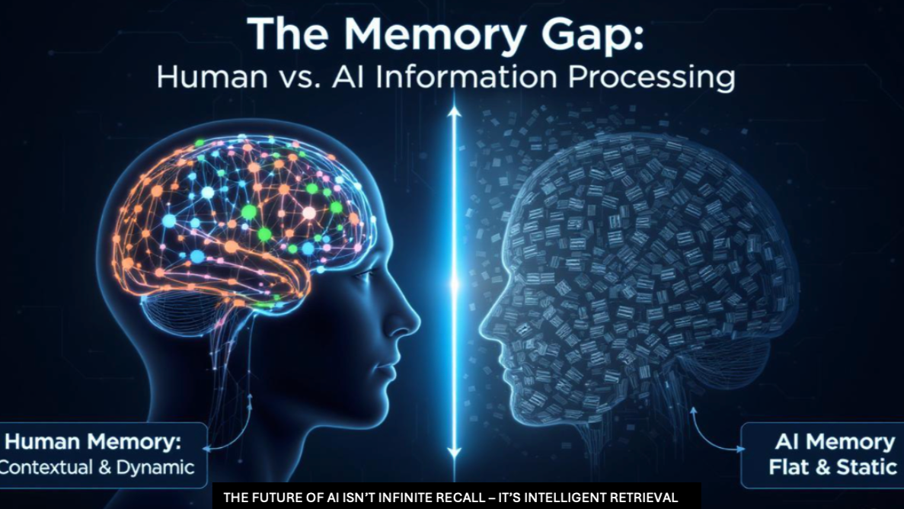
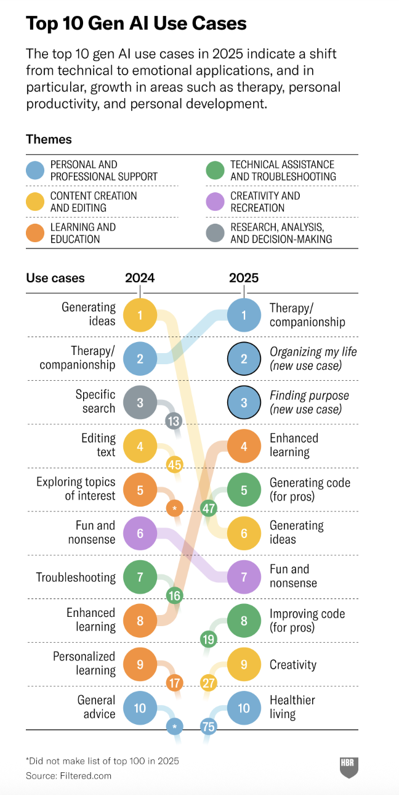

While infinite AI memory sounds promising, current LLMs lack the key ability humans have: knowing which information is actually relevant. Our brains automatically update mental models, discard outdated info, and organize conversations into clusters (work, personal, etc.).
LLMs treat everything as equally important static text, so they might reference outdated project details or mix golf chats into work queries. The real breakthrough won't be perfect recall - it'll be intelligent, contextual information retrieval that matches how human cognition naturally works.
GenAI usage has exploded and seems to show no signs of slowing down. As of March 2025 ChatGPT had 400 million weekly users and expect to reach 1 billion by the end of the year. Harvard had done a study back in April about what the top use cases are, and they found a shift towards more personal use cases - therapy, personal productivity and personal development.

Every conversation we have with ChatGPT, gives it some additional data into our mental state, what's important to us, what projects we are working on, what questions we have and so on. Meanwhile, Meta has been pushing their Ray-Ban meta glasses, that can capture what we see as we go about our life. Which means more data about all that is going on around us.
There is a lot of talk about ChatGPT having infinite memory and one can understand why this could be beneficial. Currently, ChatGPT is like our brain with just short term memory. You give it some context, have a long conversation and it remembers the context within that conversation. If you want to continue this conversation and it becomes really long, then at some point you will run out of context window and will now need to summarize this chat and put it in a new chat window and continue the conversation.
This is like Drew Barrymore in 50 first dates. Every morning she woke up, she had no memory of the previous day. So her boyfriend would create a recording so when she woke up the next day, she could watch the recording and have some context (she could not remember, but she could be given information that would catch her up).
I am fairly certain that giving ChatGPT infinite memory will be a reality pretty soon. Which means that LLMs will have access to all our chats (and if we stay away from - what if we use multiple LLMs.. I use ChatGPT and Claude). Which means that it has all the context it needs. On the surface this seems like a game changer as it will now know everything and be able to help us and answer whatever questions we have and even help proactively provide us insights etc.
Assuming that all our experiences are now stored in ChatGPT's memories and thus it becomes our AI brain, the one big missing piece is selective retrieval of this information. Our brain knows which piece of information is relevant and which piece is not and thus is able to provide us with the right information.
Here is a thought experiment - Let's say I am working with a client and I have recorded every conversation with my client and fed this to ChatGPT. So ChatGPT has all the same information that my brain has as far as this engagement with the client. While ChatGPT can summarize all the interactions, answer any questions I have on these interactions - faster and more accurately than our brain can, our brain has the ability to learn from each interaction over time and it has an understanding of that conversation that evolves over time. It discards data that is not relevant, data that is outdated, it keeps forming a new perspective about these conversations and keeps that updated. For ChatGPT, each conversation is unique and independent. So let's say we had a lot of calls 6 months ago about the scope of the project, but then we changed the scope in the last few calls. Since there is a plethora of calls from the past, that will have more importance and will be provided to us as the scope, while our brain knows that those were outdated conversations and it should ignore them.
Now, it is completely true that I could prompt it in just the right way to handle the above challenge, I could structure the data in a way that makes the LLM know what is relevant and what is not, but this requires extra work and not everyone will do this.
Bottomline - Human cognition isn't just about having access to information - it's about how we weight, contextualize, and continuously reframe that information based on evolving understanding. Our brains create mental models that update dynamically, while LLMs process everything as static text.
So while an LLM might give us a more comprehensive recall of details, our brain gives us better wisdom about what those details mean in the current context. To better serve us, it is not just about infinite memory and infinite recall, what is needed is a way for LLMs to create mental models.
Another key limitation in how current language models handle chat histories. We all have a variety of conversations stored—work chats, client discussions, research notes, personal messages, even golf talk. When I scroll through mine, it’s clear these aren’t just random blobs of text; they naturally fall into distinct clusters.
Here’s the problem: ChatGPT treats my entire chat history as one big, flat repository. When I ask about a work project, the model might pull in irrelevant tidbits from your golf conversations. This creates noise, diluting the quality and relevance of the answers I get.
But our brain is amazing at this kind of information architecture. It
This natural, sophisticated organization is what makes human memory and recall so effective. If ChatGPT and other LLMs could mimic even a fraction of this behavior, their usefulness would skyrocket. Instead of sifting through everything, they’d answer from the most relevant “cluster” of conversations, much like our brain does effortlessly.